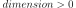
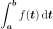
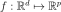
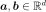
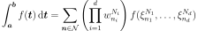
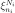
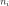
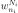
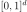
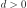

GaussLegendre¶
(Source code, png, hires.png, pdf)
{kind=link}
{kind=link}
-
class
GaussLegendre(*args)¶ Tensorized integration algorithm of Gauss-Legendre.
- Available constructors:
GaussLegendre(dimension=1)
GaussLegendre(discretization)
Parameters: - dimension : int, 
The dimension of the functions to integrate. The default discretization is GaussLegendre-DefaultMarginalIntegrationPointsNumber in each dimension, see
ResourceMap.- discretization : sequence of int
The number of nodes in each dimension. The sequence must be non-empty and must contain only positive values.
Notes
The Gauss-Legendre algorithm enables to approximate the definite integral:

with ,  using a fixed tensorized Gauss-Legendre approximation:

where  is the -points Gauss-Legendre 1D integration rule and  the associated weight.
Examples
Create a Gauss-Legendre algorithm:
>>> import openturns as ot >>> algo = ot.GaussLegendre(2) >>> algo = ot.GaussLegendre([2, 4, 5])
Methods
getClassName()Accessor to the object’s name. getDiscretization()Accessor to the discretization of the tensorized rule. getId()Accessor to the object’s id. getName()Accessor to the object’s name. getNodes()Accessor to the integration nodes. getShadowedId()Accessor to the object’s shadowed id. getVisibility()Accessor to the object’s visibility state. getWeights()Accessor to the integration weights. hasName()Test if the object is named. hasVisibleName()Test if the object has a distinguishable name. integrate(*args)Evaluation of the integral of  on an interval.
on an interval.setName(name)Accessor to the object’s name. setShadowedId(id)Accessor to the object’s shadowed id. setVisibility(visible)Accessor to the object’s visibility state. integrateWithNodes -
__init__(*args)¶ Initialize self. See help(type(self)) for accurate signature.
-
getClassName()¶ Accessor to the object’s name.
Returns: - class_name : str
The object class name (object.__class__.__name__).
-
getDiscretization()¶ Accessor to the discretization of the tensorized rule.
Returns: - discretization :
Indices The number of integration point in each dimension.
- discretization :
-
getId()¶ Accessor to the object’s id.
Returns: - id : int
Internal unique identifier.
-
getName()¶ Accessor to the object’s name.
Returns: - name : str
The name of the object.
-
getNodes()¶ Accessor to the integration nodes.
Returns: - nodes :
Sample The tensorized Gauss-Legendre integration nodes on  where  is the dimension of the integration algorithm.
- nodes :
-
getShadowedId()¶ Accessor to the object’s shadowed id.
Returns: - id : int
Internal unique identifier.
-
getVisibility()¶ Accessor to the object’s visibility state.
Returns: - visible : bool
Visibility flag.
-
getWeights()¶ Accessor to the integration weights.
Returns: - weights :
Point The tensorized Gauss-Legendre integration weights on where is the dimension of the integration algorithm.
- weights :
-
hasName()¶ Test if the object is named.
Returns: - hasName : bool
True if the name is not empty.
-
hasVisibleName()¶ Test if the object has a distinguishable name.
Returns: - hasVisibleName : bool
True if the name is not empty and not the default one.
-
integrate(*args)¶ Evaluation of the integral of
on an interval.- Available usages:
integrate(f, interval)
integrate(f, interval, xi)
Parameters: Returns: - value :
Point Approximation of the integral.
Examples
>>> import openturns as ot >>> f = ot.SymbolicFunction(['x'], ['sin(x)']) >>> a = -2.5 >>> b = 4.5 >>> algoGL = ot.GaussLegendre([10]) >>> value = algoGL.integrate(f, ot.Interval(a, b))[0] >>> print(value) -0.590...
-
setName(name)¶ Accessor to the object’s name.
Parameters: - name : str
The name of the object.
-
setShadowedId(id)¶ Accessor to the object’s shadowed id.
Parameters: - id : int
Internal unique identifier.
-
setVisibility(visible)¶ Accessor to the object’s visibility state.
Parameters: - visible : bool
Visibility flag.